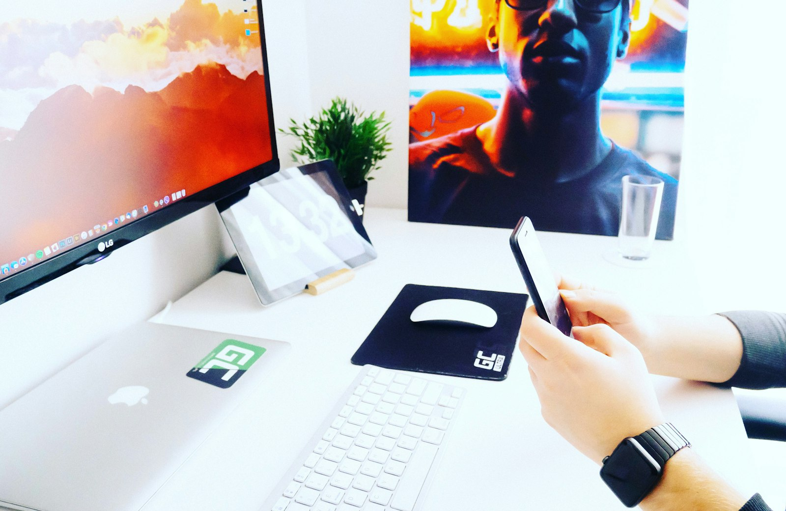
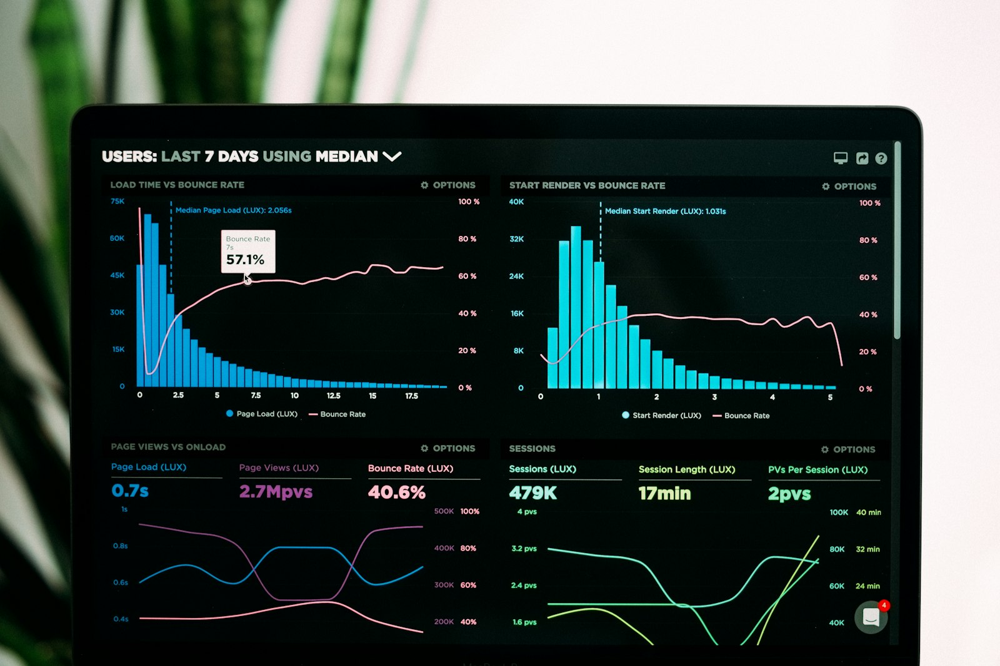

Profiling Android GPU work with AGI (Android GPU Inspector)
CPU profilers kept telling me everything was fine. The phone kept telling me otherwise. This is the tool that finally showed me what the GPU was doing.

A few months back I was helping a team with a 3D-heavy Android app. On a Pixel it ran fine. On a mid-range Adreno device it hovered around 40fps and stuttered every couple of seconds. Systrace showed a main thread that was mostly idle. Android Studio's profiler showed CPU usage nowhere near the ceiling. Everything looked healthy, and the app still felt bad.
The problem, obviously in hindsight, was that I was looking at the wrong processor. All my tools were showing me CPU work, and the bottleneck was on the GPU. That's the gap Android GPU Inspector — AGI — fills.
What AGI actually is
AGI is Google's graphics profiler for Android. It's a desktop app that talks to a connected device over adb and pulls out two very different kinds of trace:
- System profile — a wide, timeline view. CPU scheduling, GPU activity, memory, battery, and hardware GPU performance counters, all on one shared timebase. This is where you go when you don't yet know what's wrong.
- Frame profile — one captured frame, broken down into every Vulkan or OpenGL ES call the app made. Render passes, draw calls, shaders, textures, geometry, the framebuffer at each stage. This is where you go once you know which frame is the problem.
I've come to think of the system profiler as the thing that tells you where to look, and the frame profiler as the thing that tells you what to fix. Using the second one first is a good way to waste an afternoon.
It reads counters from Qualcomm Adreno, Arm Mali and Imagination PowerVR GPUs, which covers pretty much every Android device you'd realistically ship to.
Before you start: the checklist that saved me
AGI is fussier about setup than most Android tools, and the failure mode is usually a trace that captures nothing rather than a clear error. Go through this list first.
On your machine
- Windows 7+, macOS 10.11+, or Ubuntu 14.04+. On Linux you also need a 64-bit JDK or JRE 8 or newer.
adbinstalled and on your path. AGI asks for the path to the binary on first launch, and it does not guess.
On the device
- A supported device running Android 11 or higher. Android 12+ behaves better in my experience.
- USB debugging on, and Install via USB enabled if your device has that toggle.
- Turn on Stay awake in developer options. Sounds cosmetic. It isn't — if the screen sleeps mid-capture the trace is garbage, and I lost an hour to that before I read the troubleshooting page.
- Emulators are not supported. Don't bother trying.
In your app
The manifest needs the app marked debuggable:
<application
android:name=".App"
android:debuggable="true">You'll get a lint warning about hardcoding this. In practice I keep a dedicated profiling build variant that sets it, so it never ends up anywhere near a release build.
If your app uses Vulkan, you also need to install AGI's debug layers on the device before capturing:
app_package=com.example.yourapp
abi=arm64v8a # or armeabi-v7a, x86
adb shell settings put global enable_gpu_debug_layers 1
adb shell settings put global gpu_debug_app ${app_package}
adb shell settings put global gpu_debug_layer_app com.google.android.gapid.${abi}
adb shell settings put global gpu_debug_layers VK_LAYER_KHRONOS_validationRemember to clear these afterwards. Leaving the debug layers enabled globally quietly slows down every graphics app on the device, and then you spend a week wondering why your benchmarks regressed.

Installing it
Grab the build for your OS from the releases page on GitHub — Windows gets an .msi or a zip, and there are macOS and Linux builds alongside them. You have to accept the Android SDK licence terms to download.
First launch asks for your adb path, then drops you on a screen with a Get Started button. Plug in the device and AGI runs a validation pass to check the GPU driver supports profiling. It takes about ten seconds and it tells you not to touch the device while it runs — take that literally, because interrupting it gives you a cached "unsupported" result that's annoying to clear.
Capturing a system profile
This is the one I reach for first, every time.
- Click Capture a new trace.
- Pick your device from the Device dropdown, and your app under Application.
- Set Type to System profile.
- Set Start at to Manual and Duration to something short. Two seconds is the documented default and it's genuinely enough — these traces get enormous fast.
- Hit Configure under Trace Options, then Select in the GPU section, then default to take the default counter set. Click OK twice to get back.
- Choose an Output Directory and click OK. Your app launches on the device.
- Get the app into the state you actually care about — the loading screen tells you nothing — then press Start.
- When it finishes, click Open Trace.
That "Manual" start setting is the whole trick. If you let it capture automatically at launch you'll profile your splash screen. I always navigate to the heaviest scene in the app, wait for it to settle, and only then start the capture.
Reading the timeline without drowning in it
The system profile view is dense. The first few times I opened one I just scrolled around feeling vaguely intimidated. What made it click was picking a specific question before looking.

The question that matters most: is the GPU busy, or is it waiting? Look at the GPU queue track against your frame boundaries.
| What you see | What it usually means | Where to look next |
|---|---|---|
| GPU busy nearly 100% of the frame | You're GPU bound. Rendering is the bottleneck. | Counters, then a frame trace |
| GPU has big idle gaps, CPU threads busy | CPU bound — the GPU is starved waiting for work | Thread scheduling track, then a CPU profiler |
| Both mostly idle, frames still long | Usually a sync or presentation stall | Frame processing times, vsync track |
| Memory bandwidth counters pinned | Texture or vertex traffic, not raw shader cost | Texture / vertex bandwidth views |
The counters worth learning first, in the order I actually use them:
- GPU utilization — the sanity check. Everything else is meaningless until you know this number.
- Fragment vs vertex load — tells you which half of the pipeline is under pressure. A fragment-heavy frame points at overdraw, expensive fragment shaders or too much full-screen post-processing. Vertex-heavy points at geometry density and too many draw calls.
- Texture memory bandwidth — this is the one that got us. Bandwidth on mobile is shared with the CPU and it's far more precious than raw compute. Uncompressed or oversized textures show up here immediately.
- Vertex memory bandwidth — fat vertex formats and unnecessary attributes.
Google has separate guides for memory efficiency, texture bandwidth and thread scheduling, and they're short. Worth reading once so you know they exist.
One thing that consistently confuses people: mobile GPUs are tile-based. Work is deferred and batched in ways that make the timeline look nothing like a desktop GPU trace. A render pass that starts late isn't necessarily slow — it may just have been scheduled that way. Read the counters, not your intuition.
Capturing a frame profile
Once the system profile says "yes, you're GPU bound", the frame profiler tells you which part of the frame is eating the budget.
- Capture a new trace again, same device and application.
- In Type, pick Vulkan or OpenGL on ANGLE — whichever your app actually uses.
- Start at: Manual, pick an output directory, click OK.
- If your renderer runs in a separate process, set the process name in the optional field. Easy to miss, and without it you capture nothing.
- Drive the app to the frame you want, press Start, wait a few seconds, then Open Trace.
Getting the Type wrong is the single most common reason a frame capture comes back empty. AGI won't warn you — it just hands you a trace with no graphics commands in it, and you assume the tool is broken. If you're not sure which API your engine uses, check what it loads at runtime before you start guessing.
What's in the frame view
The frame profiler splits into panes and it takes a while to learn which ones matter to you:
- Performance — render passes sorted by cost. Start here. Always.
- Commands — the full API call list for the frame.
- Framebuffer — what the screen looked like at any point in the frame. Brilliant for spotting draws that are entirely occluded and therefore entirely wasted.
- Geometry — the mesh for a selected draw call, with vertex counts.
- Shader — the actual shader source and its performance stats.
- Textures — every texture bound in the frame, with format and size. This is where you find the 4096×4096 uncompressed PNG someone added for a UI icon.
My routine is: sort render passes by GPU time, open the most expensive one, scrub the framebuffer to see what it's drawing, then check the textures and shader it uses. Four clicks, and usually the answer is sitting right there.
What we actually found
In our case, three things, none of which I would have guessed:
The biggest was texture bandwidth. A batch of environment textures had been exported as uncompressed RGBA8 instead of ASTC. Nobody noticed because on a Pixel there was enough headroom to absorb it. Re-encoding them cut the frame time by roughly a third on the mid-range device.
Second, a post-processing pass was running at full resolution when half resolution was visually identical for what it did. The framebuffer pane made that one obvious — I could see the blur being computed at a fidelity nothing downstream used.
Third, and this is the one that stung: a UI overlay was drawing behind an opaque panel on every single frame. Pure waste, invisible in every tool except the framebuffer view, and it had been there for over a year.
None of these were exotic. That's sort of the point. GPU problems on mobile are usually boring problems that no one could see.
Things worth knowing before you sink a day into it
- Device support is narrower than you'd like. Check the supported devices list before you promise anyone results. If the exact phone your users are complaining about isn't on it, you'll be profiling a proxy device and reasoning by analogy.
- Traces are big. Keep durations short. A ten-second system profile with all counters enabled will make the UI crawl.
- Profile a release-ish build. Debug builds have different shader compilation behaviour and you'll chase phantoms. A dedicated variant that's optimised but debuggable is the sweet spot.
- Clean up after yourself. Those
adb shell settings put globalcommands persist across reboots. Unset them. - It's not only for games. Any app with heavy custom drawing, camera preview pipelines, video compositing, or complex Compose canvas work can be GPU bound. Games are just where it shows up most obviously.
- If a capture fails and the message isn't helpful, the troubleshooting page is unusually good. Nine times out of ten it's the debuggable flag, the wrong API type, or the screen going to sleep.
Was it worth it
The setup is more work than it should be, and the first trace you open will look like noise. But I'd been guessing at GPU behaviour for years, tuning by trial and error and hoping the numbers moved. Being able to see which render pass costs what, and which texture is eating the bandwidth budget, changed how I think about rendering performance entirely.
If you ship anything with meaningful GPU work on Android, spend an afternoon with it. Start with a system profile on a device you know feels bad, ask one question, and follow it down.
Official docs: developer.android.com/agi · Quickstart · Downloads
← All posts